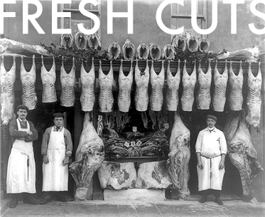
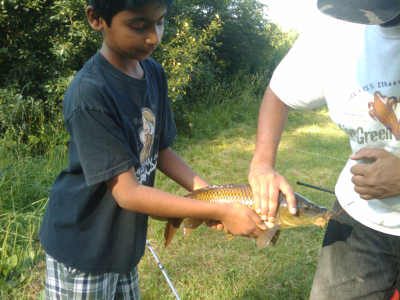
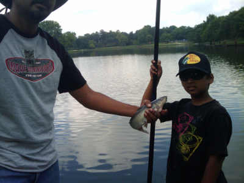

SUTTER MEATS IS A HUSBAND AND WIFE TEAM DEDICATED TO PRESERVING THE CRAFT OF TRADITIONAL BUTCHERY AND TO NARROWING THE GAP BETWEEN THE EATER & THEIR FOOD SOURCE
We work directly with family farms to provide locally and sustainably-raised meat to the Pioneer Valley. To honor the effort and care our farmers put into raising their livestock, we are committed to using the whole animal by serving not only fresh cuts of meat, but also an assortment of sausages, charcuterie, deli meats, smoked meats and stocks; all made in house. We are dedicated to providing residents of our community with an opportunity to savor the bounty of humanely-raised meat from neighboring farms. We believe that a happy and healthy animal raised in its natural environment makes for better tasting, fuller-flavored meat.



The Youth Program that was originally initiated by a group of parents in an effort to create a
medium that would allow our youth to balance their Islamic values while facing the challenges
of today's environment. This program had its humble beginnings in the Spring of 2011 in the
home of one of the parents, and Alhamdulillah in November 2011 moved into it's current location
at Masjid AlHuda, where it now benefits many Junior High and High School youth from our community.
right home 2